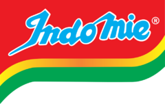

Mie

Indomie
Indomie telah diluncurkan sejak tahun 1982
dan kini tersedia di banyak negara, seperti:
USA, Australia, Inggris, Timur Tengah dll.
Jangan lewatkan semua varian rasa Indomie.
Supermi
Supermi diperkenalkan pada tahun 1968 dan
merupakan salah satu pionir mie instan di
Indonesia
yang hingga kini masih eksis untuk
menambah kehangatan keluarga.
Sarimi
Sarimi
Satu lagi produk Indofood yang telah
lama memanjakan lidah masyarakat Indonesia.
Dikenal dengan rasa dan aroma yang kuat,
disukai semua orang.
Sakura
Mi jadul yang pas di kantong dan cita rasanya
tidak perlu ditanyakan lagi.
Pop Mie
Cuma Pop Mie yang bisa seruin hari lu. Cukup
seduh 3 menit, cuss lanjut lagi serunya!
Mie Telur Cap 3 Ayam
Di antara keunggulan yang diusung Mi Telur 3
Ayam adalah bentuk mi dan teksturnya yang
beragam serta tidak mengandung bahan
pengawet. Mudah diolah dan diproses secara
higienis dengan standar mutu yang tinggi, Mi
Telur 3 Ayam telah menjadi pilihan favorit
banyak orang. Pastikan Anda juga
menggunakannya untuk keperluan memasak
sehari-hari.